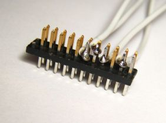
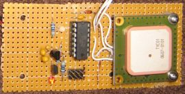
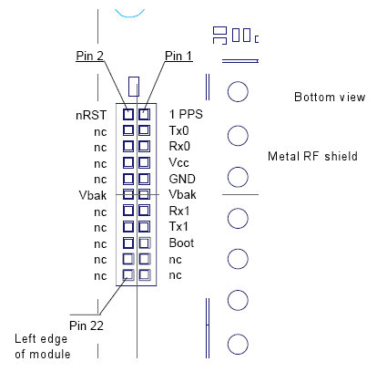

Intro | Build it! | Command reference | How it works | Download | Customize | Todo | User forum
How to build the Open GPS Tracker
The tracker is easy to build on a perfboard. I used a basic one-pad-per-hole perfboard
and 26-gauge wire, but 30-gauge would probably be better. All the electronic
parts are available from Mouser Electronics. Radio Shack sells the perfboard
and the 2.5mm plug for the phone. You could also buy these from Mouser.
Mouser is out of stock on GPS modules. See the user forum for an alternate source.
If you are building a tracker, please post in the user forum. I am looking for bug reports, pictures, and information about how the tracker works for you. I will provide technical support to people who are building units.
The Mouser Electronics (http://www.mouser.com) order is listed below. This
order includes an AVRISP2, which you may not need if you already have an AVR
programmer. I've included two each of all the small parts, and three of the
GPS module connectors. This connector is the only tricky part of the build. It
is easy to ruin one, as I did. For testing, you can just insert the 26-gauge
wire into the socket on the GPS module, but for permanent assembly you need the
connector. The connector has one extra pair of pins, which you should cut off.
You will be soldering to the long side and plugging the short side into the GPS
unit.
You need to solder to four pins on the GPS header, three of which are right next to each
other. Clamp the header with a small vice or a "third hand" clip. Bend the wire
into a loop with pliers and attach it to the pin, then carefully solder it. I solder
pin 3 and pins 7 and 11 first, putting the wires down low near the plastic separator,
then solder pin 9 with the wire up high away from pins 7 and 11. Check for shorts
with a meter.
 
I superglued the IC socket and the two rows of three pins for the programming port,
then wired those together and installed the rest of the components. Put the 0.1uF
capacitor right next to the IC socket. The GPS module is attached to the board with
2-32 size screws, nuts, lock washers, and 1/4 inch spacers, which are not quite long enough.
Get 3/8 inch spacers if you mount it this way.
| Mouser Part # | Description | Quantity | Price Each |
|---|
| 556-ATTINY84-20PU | Atmel AVR microcontroller | 2 | $2.90 |
| 827-AME8811AEATZ | 3.3 volt regulator | 2 | $0.69 |
| 522-ZTX1151A | PNP transistor with low saturation voltage | 2 | $1.51 |
| 581-SA105E104M | 0.1 uF ceramic capacitor | 10 | $0.08 |
| 581-TAP106K006SCS | 10 uF tantalum capacitor | 4 | $0.50 |
| 855-M50-3501242 | 1.27mm M50 connector for GPS device | 3 | $1.45 |
| 171-0025-EX | 2.5mm stereo plug for phone | 2 | $1.35 |
571-1-390261-3 or
571-26415994 | 14 pin IC socket | 2 | $0.15 |
| 604-WP937EGW | Two-color red/gren LED | 2 | $0.34 |
| 604-WP132XID | Red LED | 2 | $0.12 |
| 660MF1/4DC3321F | Resistor 3.32K ohm | 5 | $0.03 |
| 660MF1/4DC4700F | Resistor 470 ohm | 5 | $0.03 |
| 755-1N4148T-77 | Switching diode | 5 | $0.03 |
| 12BH431-GR | 3 AAA battery holder | 1 | $0.89 |
| 571-41032390 | Pin header 40-pin breakaway | 1 | $1.57 |
| 340-V23993-A1035D | Tyco GPS receiver module | 1 | $61.50 |
| 556-ATAVRISP2 | AVRISP2 USB AVR programmer | 1 | $35.91 |
Drawings below donated by Empowered Web Development
Microcontroller schematic

Power supply schematic for 4.5V battery

Programming plug

GPS module socket, module facing antenna down

Checkout process
When you finish building the project, perform these checks. This will prevent destruction of components and verify that the circuit is built correctly.
Unpowered checks with no batteries, MCU, phone, or GPS installed:
- Check continuity from the negative battery terminal to MCU pin 14, phone jack ground, regulator center pin, and GPS header pin 9.
- Check continuity from the positive battery terminal to the input pin of the regulator.
- Check continuity from MCU pin 1 to the output of the regulator.
- Check for shorts between all adjacent pins of the MCU, programming header, phone jack, and GPS module. There should be no continuity between any adjacent pins.
- Check continuity from each pin of the programming header to the corresponding MCU pin.
- Check continuity from each pin of the phone jack to the corresponding MCU pin.
- Check continuity from pin 3 of the GPS header to pin 11 of the MCU.
- Place the GPS header over the GPS module and make sure you have wired the right pins.
The plug is very small and mistakes here are expensive. All the wires should be on the inside row of pins, closer to the metal shield. No wires should be on the outside row closer to the
edge of the GPS module.
Powered checks with batteries but no MCU, phone, or GPS installed:
- Measure voltage between pin 1 and pin 14 of the MCU socket. You should have 3.3V with pin 1 positive.
- Measure voltage between pins 9 and 11 of the GPS header. You should have close to 3 volts with pin 11 positive.
- Place a jumper between pins 5 and 14 on the MCU socket. The red "GPS active" LED should light.
- With the jumper in place, measure voltage between pins 7 and 9 of the GPS header. You should have 3.3V with pin 7 positive.
- Remove the jumper, and place it between pins 1 and 2 of the MCU socket.
- Place another jumper between pins 3 and 14 of the MCU socket. The two-color status LED should light red.
If it lights green, it is installed backward and all status codes will be reversed in color.
Reading status codes
The two-color status LED blinks to provide status codes. Status codes are two-digit numbers which assist in debugging.
The first digit is always shown in green, and the second digit in red. For example, one green
blink followed by three red blinks is code 13. Three green blinks followed by two red blinks
is code 32. The status codes are displayed one at a time from a queue, so the event that
caused a status code may be over by the time the code is displayed.
| Code | Description |
| 11 | phone polled |
| 12 | send message failed |
| 13 | phone poll failed |
| 14 | no phone number defined |
| 21 | invalid password |
| 31 | power on or reset |
| 32 | watchdog reset |
| 33 | eeprom initialized from defaults |
| 34 | remove jumper to reinit |
Final checkout and setup
- Remove one battery, install the Atmel MCU, and put the battery back in.
- If your MCU is unprogrammed, connect the AVRISP2 to the computer and to the board via the programming header. Both lights in the AVRISP2 should be green.
- Download the appropriate HEX file for the units (feet, meters, MPH, KPH) you want from the Download link at the top of this page.
- Run AVR Studio. Choose Tools, Program AVR..., Connect.
- Choose AVRISP mkII and USB. Click Connect.
- Some AVRISP2s need an upgrade to work properly: http://www.atmel.com/dyn/resources/prod_documents/avrisp_mkii_fix.html
- Choose Board tab and set ISP Freq to 125 kHz. Go back to Program tab.
- Device should be ATtiny84. Programming mode is ISP. Erase and Verify boxes checked.
- In Flash, Input Hex File, choose your Hex file. Click Program.
- The programming status window should show OK.
- The status LED will begin blinking shortly after the programming completes. With no phone
attached, you should get codes 31 (power on or reset), 11 (polling phone), and 13 (phone poll failed.) A freshly programmed chip will also display code 33 (EEPROM initialized) once.
- Charge the Motorola C168i mobile phone. Install the SIM card and activate the
prepaid service using the instructions included. Call the interactive voice response
system at 1-800-901-9878 and activate a messaging plan (200 messages for $5.00, keywords: buy features, messaging, 200, yes, buy it) to avoid being charged 15 cents per message. You should be able to send and receive SMS messages from the phone keypad.
- Configure the phone for short (10 second) display backlight (Settings, Initial Setup, Backlight, 10 seconds.)
- Set the phone to silent mode (Settings, Ring Styles, Style, Silent.)
- Set message delivery to Phone first (Message, Options, Memory Meter, Select SMS Memory, Phone First.) If you do not do this, Powersave mode will not work!
- Remove a battery from the tracker's battery pack. Connect the Tyco GPS unit to the header,
checking against the diagram to make sure it is plugged in correctly.
- Install the removed GPS battery, and then plug the 2.5mm plug into the mobile phone's
headphone jack. The headphone jack is also the data port on this phone.
- You should get code 11 (polling phone) but no code 13 (poll failed.) If so, your microcontroller is communicating with the phone.
- If you get code 13, reset the microcontroller by momentarily shorting pins 5 and 6 on the programming header. If you still get code 13, unplug the phone and power cycle it.
- Removing the GPS battery with the phone connected is not recommended, and will not reset the microcontroller. The phone will partially power the microcontroller through the output line and a protection diode in the chip.
- When you get code 11, and no code 13, your unit is ready for setup.
- Please post to the user forum. I want to hear about working trackers, and will provide support
for anyone having trouble with one.
Setting the reply address
The GPS tracker stores a reply address, and always sends messages to the reply address.
It does not care where the messages come from, because messages sent from email do not
include the From address (using AT&T GoPhone service.) The reply address can be a
mobile phone number or an email address. Regardless of where commands are sent from,
replies go to the reply address.
To set the reply address to a mobile phone number, use a mobile phone to send a
text message to the tracker's phone number:
GPS SETADDRESS 8185551212
where 8185551212 is the mobile number you want tracker messages sent to. The "GPS" must be uppercase.
The SETADDRESS can be upper or lower case. After sending the message, the tracker's phone
display should light, the tracker status light should blink code 11, and you should receive
a reply saying "COMMAND EXECUTED".
To set the reply address to an email account, you need your carrier's Email Gateway number,
which is a special phone number used to route text messages to an email account. For AT&T
the Email Gateway number is 121. For other carriers, go into the phone's SMS settings
(Messages, Options, Message Setup, Text Messages, Email Gateway) and look up the Email Gateway number. Send a text message to the tracker:
GPS SETADDRESS 121 user@domain.com
where "GPS" is in uppercase, 121 is the Email Gateway, and user@domain.com is the email
address. For AT&T service, you can send an email to phone-number@txt.att.net
(8185551212@txt.att.net) to send a text message. For other carriers, you will have
to look up the correct email address. The tracker will reply "COMMAND EXECUTED."
Requesting a locate
Once you have set your reply address, you can request a locate. Send the message:
GPS LOCATE
where GPS is in uppercase. The tracker's phone display will light, the status LED
should blink code 11, and the GPS power LED should come on. For the first locate, it
will usually stay on for a minute or more. When the GPS light goes out, the status
LED will blink code 11 again, and you should receive a reply:
LOCATE POS 34 05.8779 N 118 20.6368 W ALT 377 FT SPEED 0.0 MPH COURSE 11.05 AT 08/04/05 22:31:51 UTC SATS 04
This is a location report from the tracker. The fields are:
- LOCATE - the report is the result of a manual locate request. There are other types of reports in tracking mode.
- POS 34 05.8779 N 118 20.6368 W - latitude and longitude in degrees and decimal minutes. You can type or paste everything after POS right into Google Maps (http://maps.google.com) to see a map or satellite view of the location.
- ALT 377 FT - measured GPS altitude, only accurate for 4 or more satellites (see below)
- SPEED 0.0 MPH - speed of the GPS unit when the fix was taken. A unit sitting still often reports up to 2 mph.
- COURSE 11.05 - course in degrees if the unit was moving
- AT 08/04/05 22:31:51 UTC Year, month, day, hour, minute, second Universal Coordinated Time that the fix was taken
- SATS 04 - number of satellites providing the fix. Four or more indicates a 3D fix (altitude valid) while three satellites indicates a less-accurate 2D fix.
If you get a valid location report, your tracker works. If you get "GPS TIMED OUT WAITING FOR FIX" the tracker is not in GPS coverage. Although the A1035 gets a fix inside most buildings, steel construction can block the signal. Take the device outside and try again.
If you get "NO DATASTREAM FROM GPS DEVICE" your GPS module is not sending any
data to the microcontroller. Check for faulty connections and verify that power is applied
to the GPS module when the GPS power LED is lit. Dead GPS batteries can also cause
this error, since the microcontroller needs less power than the GPS module.
Securing your tracker
The "GPS" prefix you have been putting before commands is actually a default password. You can and
should change it. Anyone who knows your password can change it and take control of the tracker.
Unlike commands, the password is case sensitive. To change it, send a text message like:
GPS SETPASSWORD newpass newpass
Where "newpass" is the new password you want to set. It must be between three and
sixteen characters, and must be repeated twice after SETPASSWORD. You should get back
"PASSWORD CHANGED." You would then have to send "newpass LOCATE" to request a locate, for example. If you lose your password, you need physical access to the tracker to clear the configuration (see the command reference.) Messages sent without the correct password will be ignored.
Other things the tracker can do
So far you have seen the normal mode, in which the tracker replies immediately to requests.
The tracker has two other modes: tracking and powersave.
In tracking mode, the tracker automatically takes GPS fixes, and sends you a message when it
starts moving, when it stops moving, when it goes out of GPS coverage, and periodically while
it is moving. You can plot the fixes on Google Maps or a similar service to follow the tracker's movements.
You can configure how often the tracker takes a fix and how often it alerts you. You can also
set a speed limit and receive an alert if it is exceeded.
In powersave mode, the tracker turns the phone power on and off periodically, allowing the
phone battery to last longer than its typical standby time. For example, the phone may be
off for an hour and on for ten minutes. In this case, it can take up to an hour for the
tracker to reply to messages. You can remotely take the tracker out of powersave mode
when you need location reports. Tracking and powersave modes are mutually exclusive;
setting one mode clears the other.
The tracker has several configurable options, and a status command that reports the current settings, the phone battery status, the phone signal strength, and the firmware revision. You can set a name which will be prefixed to all tracker replies, so several trackers can report to the same
destination. See the command reference for details.
{kind=link}
{kind=link}